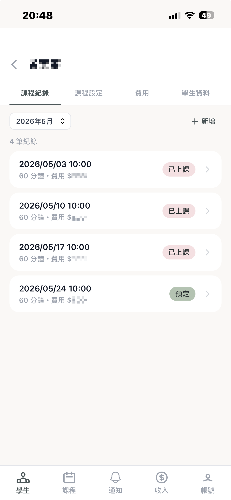
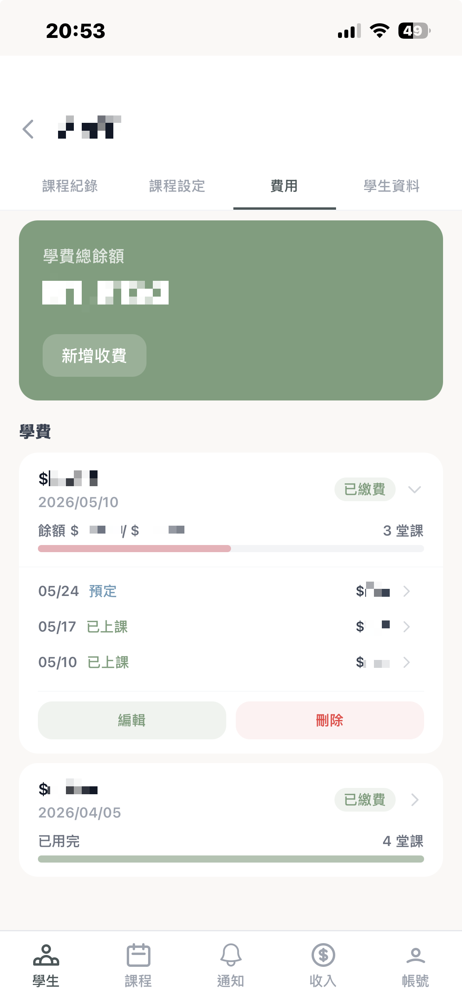
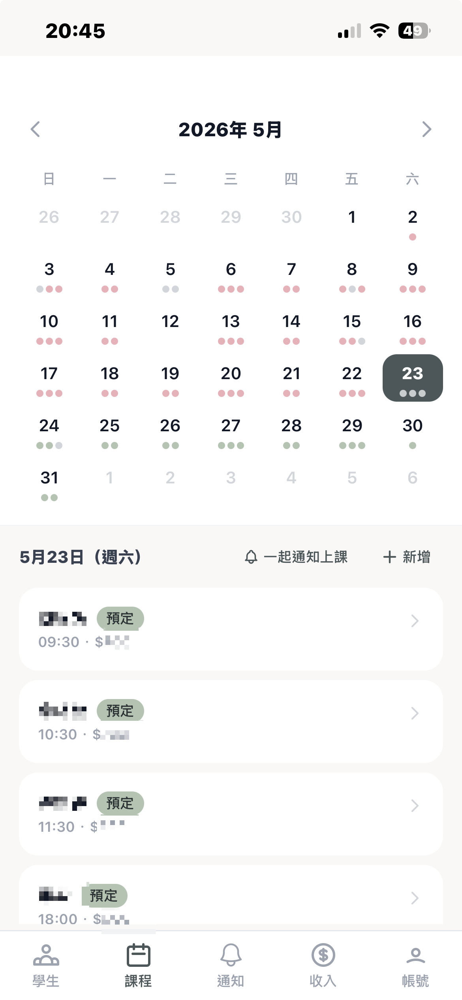
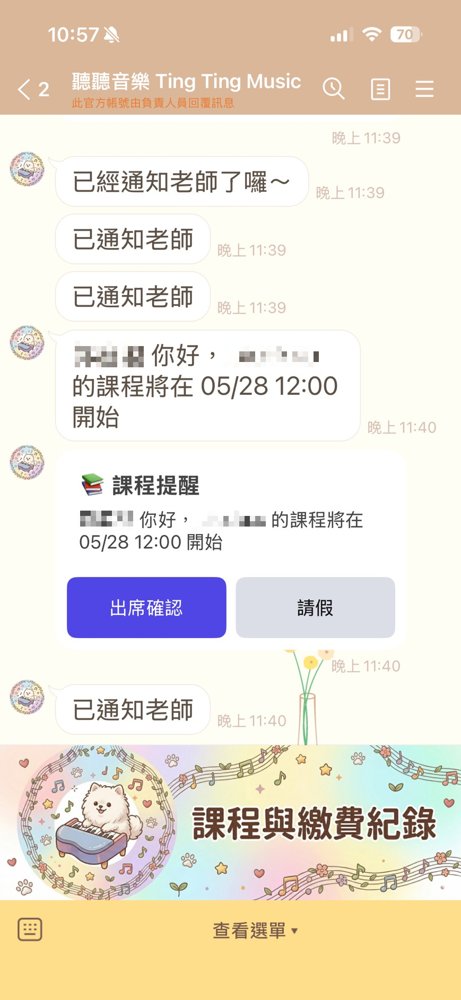

[一言不合自己寫 3] 把音樂老師老婆當客戶，開發家教學生管理系統 ── 聽聽音樂 APP

這篇沒有什麼了不起的技術，只有一個工程師老公的一點點雞婆。🙃
前情提要
我老婆是位音樂老師。
嗯 ── 一位美女老師 …（我背後被抵著一把槍 🔫）
以下是她的日常 ──
她有幫學生一對一上家教課。
也會去固定的音樂補習班，以鐘點費的方式接課。
學生有大有小、有少有老，有的固定一週一次、有的會臨時調課，有的繳月費、有的繳單堂。
聽起來工作其實還算單純。
但她管理這些事情的方式 ——
全部都在 Line 的記事本裡。
對，就是那個 Line 群組裡，可以「釘留言」的那個記事本 XD
對她來說好像也用得挺順手 ──
但我這個工程師老公在旁邊看著看著，渾身不對勁的地方還真不少 😅
下面整理了 4 個我最看不下去的痛點。
痛點 1：學生資料散在記事本
每個學生一則記事本，內容大概長這樣：
1 | 小明 |
要找某個學生的資料，就 ——
往上滑、往上滑、再往上滑。
長期下來，要翻到幾年前的一月份的紀錄 ──
可能要先做個手指暖身運動（否則可能會抽筋 XD）。
痛點 2：「這個月到底收了多少錢？」
每次月底，我問她：「這個月收入大概多少？」
她會給我一個非常專業的回答：
「⋯⋯ 欸我算一下喔。」
然後呢？
接下來就沒有然後了。
因為 ──
她自己也懶得：
- 把每個學生的記事本一則一則打開
- 數這個月上了幾堂、有沒有人預繳、有沒有人欠款
- 補習班那邊鐘點費又是多少
因此她永遠不會知道這個月收入的精準數字。
身為工程師，總覺得上面的模式充滿了 bad smell …
痛點 3：上課前要手動 Line 通知學生
她有個固定的習慣：上課前一天，要傳訊息提醒學生「等等記得來上課喔」（不然常常被放鳥 🐤）
聽起來很簡單對吧？
但一天有 5、6 個學生的時候，就要打開 5、6 個對話框、複製貼上 5、6 次「Hi 小明～ 明天記得來上課喔！」。
而且 ——
有時候上課上到一半才想起來，下一個學生忘了通知。
痛點 4：補習班的鐘點課表，全憑記憶
她在外面的音樂補習班有固定上課，大部分的情況課程都是固定的。
但你我都當過學生，知道學生最愛的事情 ── 請假。
今天 A 請假
明天 B 請假
C 要請假兩週，因為爸媽要帶他出國去玩之類的
因此造成課程的不固定。
那那個大小姐她怎麼記呢？
用腦袋記。
對，就是用她那顆同時要記學生姓名、樂理、曲目、學生家長綽號的腦袋去記。
偶爾就會出現經典畫面：
「欸，今天不是小明要上課嗎？」
「⋯⋯啊，我以為是明天！」
老實說，身為工程師，這樣的慘劇我已經看不下去了。
但我本來要幫她在 Notion 上建立一個管理系統。
結果她說：
「家長已經習慣用 Line 了，所以什麼事情在 Line 上面可以找到。」
- 上課紀錄在 Line 可以找到
- 收款紀錄可以在 Line 上面找到
- 通知發送需要在 Line 上面完成
筆記：這個 APP 的功能需要串接 Line Message API & LIFF …
也因為她需要 Line 的功能，我後來就有幫她在開發管理系統，只是常常因為忙就開發到一半就忘記它的存在了（我的錯）
想說現在 2026 年可以用 AI 完成你所有的願望 🌟✨💫
好啦，其實我前面已經用 AI 開發了不少自己的小玩具。
例如：
── 是時候幫老婆大人弄個順手的管理系統了。
於是《聽聽音樂 APP》就這樣誕生了。
技術選擇 & 部署
考量到她平常主要是用手機在處理這些事情（畢竟上課中還要打開電腦太誇張了），
又懶得作一個原生的 APP，於是最後做成一個 PWA（Progressive Web App）。
她可以把網頁加到 iPhone 桌面，看起來就跟一般 App 一樣，但我不用花時間搞 iOS 上架（對，我就懶）。
技術棧很簡單：
- React PWA 當前端
- Go 當後端
- PostgreSQL 存資料
- LINE Messaging API 處理通知
- 整包用 Docker 包起來跑。
不過有個小細節 ── PWA build 完之後，我直接讓 Go server 在 /pwa/* 把它吐出來，等於整包 APP 就是「一個 Go binary + 一個 Postgres」。
好處是：
- 前後端同源，完全不用處理 CORS
- 不用另外開 nginx 處理 static file
- 部署的時候只要管一個 binary
對 side project 來說省事很多。
另外順手做了一件事 —— Docker 裡跑一個 db-backup 服務，每 6 小時 pg_dump 一份，自動 rotate 保留 30 天。
畢竟老婆每個學生的繳費紀錄、上課紀錄都是真的錢，如果掉了 … 我的命也會跟著掉了 😐。
不過比較特別的是部署的地方 ——
我沒去租 VPS，而是丟到家裡那台 2017 年退役的 MacBook Pro 上跑。
對，就是那台螢幕邊框已經泛黃、鍵盤還是那一代惡名昭彰蝶式設計的老 Mac。
換成 M 系列之後她就一直闔著蓋子躺在桌邊當擺設，現在剛好讓 Docker 跑起來，找到它的下一春了！（俺感到欣慰 🥲）
不過問題來了 ── 家裡的 Mac，外面的 LINE Bot 要怎麼打進來？
Cloudflare Tunnel。
在 MacBook 上跑一個 cloudflared，它會跟 Cloudflare 邊緣節點建立一個反向 tunnel，外面打過來的請求就從 Cloudflare 路由進來：
- 不用申請固定 IP
- 不用設 port forwarding
- 不用 DDNS
- HTTPS 證書直接吃 Cloudflare 的，連 Let’s Encrypt 都省了
家用網路那種「ISP 不給固定 IP」的問題完全跳過。
唯一風險大概就是停電的時候服務也跟著掛掉 —— 不過老婆上課的時段應該不太會停電啦（應該吧）。
這篇就不展開細節了，下面分幾個區塊講一下她實際在用的功能。
功能介紹
功能 1：學生與課程的「正常」管理
最基本的部分。每位學生有自己的頁面，可以看到：
- 基本資料（年齡、家長 Line、學費單價）
- 上課歷史（哪一天上了、哪一天請假、補課補在哪天）
- 收費狀況（這個月還欠幾堂、預繳剩幾堂）

跟記事本最大的差別是 ——
這個學生的資料都在這個頁面 ── 不用再去 Line 筆記本滑了。
這邊她最常用的功能之一是「學費」：
學生一次預繳 10 堂，每上一堂就從池子裡扣一堂，剩幾堂一目了然。
要是不小心上超過了，系統會跳紅字提醒「超用 X 堂」，免得月底才發現少收錢。

雞婆值++;
功能 2：課程行事曆 ── 一眼看完整個月的安排
跟「學生詳情頁」相對，「課程行事曆」是從時間軸的角度看所有課。
切到底下 tab bar 的「課程」分頁，就會看到整個月的日曆 ——
每一天底下會有幾個小圓點，代表那天有幾堂課、什麼類型（家教 / 鐘點代課），不用點進去就能看出哪幾天比較滿。
點某一天就展開那天的細項：時間、學生、地點、費用。

對她來說最有感的是 ──
不用再記「我今天還剩幾堂沒上？」、「等等是哪個學生？」
對我來說最有感的是 ──
她終於不會再問我「欸今天是不是 OO 要上課？」這種我也回答不出來的問題 XD
雞婆值++;
功能 3：LINE Bot 自動發出席通知
這個是她最有感的功能。
設定好上課時段之後，系統會自動在上課前幾小時，在 APP 跳出提示通知。
讓我老婆確認發送的訊息後，再透過 LINE Bot 推訊息給學生。
學生收到的訊息裡有兩個按鈕：「出席確認」、「請假」。
學生點下去之後 ——
老師這邊就會收到結果，不需要再追問。
而且為了避免學生手殘亂按，我還加了一個「不會重複通知」的小機制（從 log 看到還真的有白目的學生狂按 XD）。
她用了第一週後跟我說：
「我覺得，這個東西讓我每天少打很多訊息。」
雞婆值++;
功能 4：學生 / 家長從 LINE 進來查紀錄（LIFF）
LINE Bot 是「老師推給學生」的方向。但反過來呢？
學生或家長偶爾會想自己查 ——
- 「我這個月還剩幾堂？」
- 「上個月有沒有繳費？」
- 「上週老師有沒有寫我請假的紀錄？」
以前這些問題都要 ── 問老師。
現在他們從 LINE 點 Rich Menu 進來，就會打開一個 LIFF（LINE Front-end Framework，可以把網頁嵌在 LINE App 內），直接看到自己的：

- 上課紀錄（月曆檢視）
- 學費池剩幾堂、超用 / 未用
- 歷次繳費紀錄
也就是說 ── 老師端有 PWA、學生端有 LIFF，雙方都在 LINE 生態裡，老婆完全沒有失去她原本的工作流。
這也呼應了當初她的要求：
「家長已經習慣用 Line 了。」
雞婆值++;
功能 5：鐘點費課表 ＆ 月結
針對她在外面補習班的兼課場次，我做了一個獨立的「鐘點費課表」。
每週固定的時段、臨時加場、被取消的場次，都可以在裡面登記。
每個月底，系統會自動依鐘點費單價算好「這個月在 A 補習班上了幾堂、總共多少錢」，整整齊齊一張表。

雞婆值++;
後記
從此以後 ——
我的老婆並沒過著幸福快樂的日子（因為她的夢想是當貴婦不用上班 XD）
但她不用再用腦袋記那些麻煩，也不用月底拿著計算機在那邊敲半天。
大約四月中開始開發，這個 APP 開發了大概一個多月。
需求溝通：
一開始先跟老婆做使用情境訪談（把老婆當成客戶在管理），紀錄她的需求。
整理出一個 Spec 版本，跟她確認彼此對功能的認知是否相同。
規劃功能：
我習慣先規劃資料庫，再跟 Claude 討論這樣設計的優缺點：

UI 設計：
這個是改最多次的，還要把老婆要的主題配色改成她要的「莫蘭迪色」…
改來改去改到她點頭的版本，才是最花時間的。
開發執行：
使用 Claude Code 幫忙開發，自己只負責把老婆的需求翻譯給 AI 聽。
自己順便 code review 一下。
這個 APP 基本上都是針對我老婆上課的使用情境開發的。
因此應該不太能做成一個功能開放給其他人使用（雖然一開始我有這個念頭 …）
畢竟每個老師的收費方式、上課習慣都不太一樣，要做成通用版本工程量太大了。
但對我來說，能用自己的專業，幫助另一半解決麻煩事，這種感覺還真不錯啦 ～
只是她常常會跑來找我說哪裡有問題（這是客戶服務的一環）
這篇沒什麼技術深度，比較像是一篇生活紀錄。
最後感謝你的閱讀囉，我們下次見！Bye ～